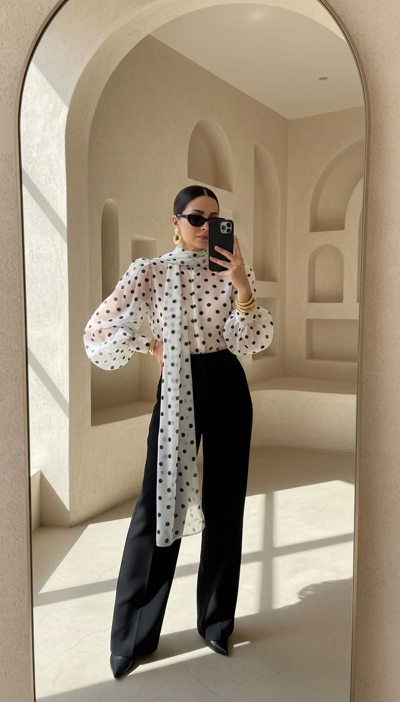
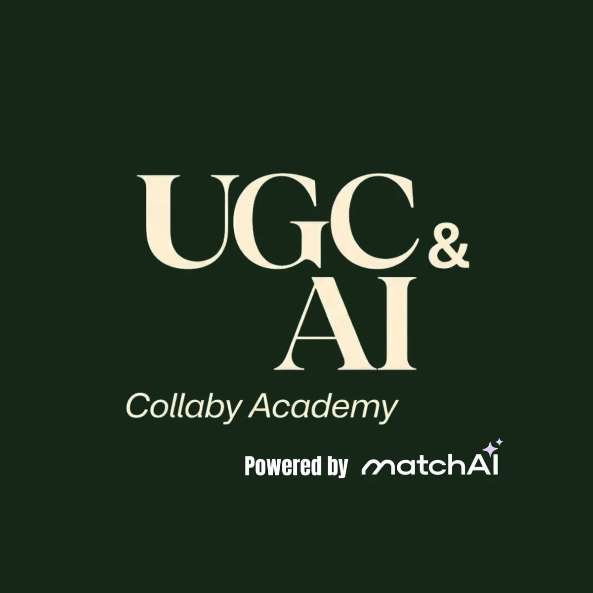
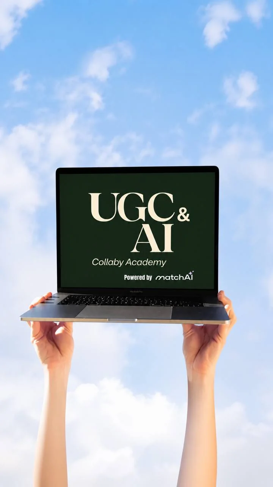

Kariyerini değiştirmek
Sabit çalışma düzeninden çıkıp dijitalde kendine ait bir alan kurmak istiyorsun.
AI içerik üreticisi · Akademi partneri
Ben Merve. Kariyerini yeniden kurmak isteyen, içerik üretimine sıfırdan başlayan kadınlara eğitim yolculuklarında kişisel destek veriyorum.
Merve’nin AI ikiz avatarı
Sıfırdan başlayanlar için
kişisel yol arkadaşlığı
01 / Belki sen de buradasın
İçerik üretimi bazen kırk sekme, üç uygulama ve hafif bir “ben ne yapıyordum?” hissi yaratabilir. Yol haritası tam burada devreye girer.
Sabit çalışma düzeninden çıkıp dijitalde kendine ait bir alan kurmak istiyorsun.
Yapay zekâyı kullanmak istiyor, ancak araçlar ve promptlar arasında kayboluyorsun.
Akademiye katılırken süreci bilen ve sorularına eşlik eden birini arıyorsun.

kurumsal deneyimden
dijital girişimciliğe
02 / Hikâyem
12 yıl boyunca asistan olarak çalıştım. Zamanla yaptığım işin yaratıcı yönümü ve potansiyelimi ortaya çıkarmadığını fark ettim.
Seyahat etmeyi sevdiğim için sabit mesai düzeni artık hayal ettiğim yaşamla örtüşmüyordu. Böylece dijital dünyada sıfırdan yeni bir yol kurmaya başladım.
Bugün odağım; yaratıcı insanların görünür olmasına, kaliteli içerik üretmesine ve üretim sürecini teknolojiyle güçlendirmesine yardımcı olmak.
“Bir gecede değişmedim. Öğrendim, denedim ve kendi yolumu kurmaya başladım.”
03 / Kişisel desteğim
Partner bağlantımla akademiye katıldığında kişisel mentörlük desteğime ve özel destek gruplarıma ek ücret ödemeden dâhil olursun.
Nereden başlayacağını ve öğrendiklerini hangi sırayla uygulayacağını birlikte netleştiririz.
Görsel fikir geliştirme, prompt yaklaşımı ve içerik kalitesini artırma konularında destek alırsın.
İçeriklerini konumlandırma ve dijital görünürlüğünü güçlendirme üzerine birlikte çalışırız.
Sorularını paylaşabileceğin, birlikte ilerleyebileceğin topluluk alanına katılırsın.
Bu kişisel destek Merve Övür tarafından sunulur ve akademinin resmî eğitim programından ayrıdır.
04 / Eğitim altyapısı
UGC, yapay zekâ destekli içerik üretimi, dijital pazarlama ve girişimcilik alanlarında eğitim içerikleri sunan ayrı bir eğitim platformudur.

Eğitim odağı
Program içeriği ve erişim koşulları akademinin güncel kayıt sayfasında doğrulanır.
05 / Ayrımı netleştirelim
Akademi
Merve Övür
06 / Nasıl ilerliyoruz?
“Merve ile başla” butonundan kayıt bilgilerine ulaş.
Partner bağlantım üzerinden akademi kaydını tamamla.
Kaydın doğrulandıktan sonra kişisel destek ve özel grup sürecine katıl.

07 / Senin için mi?
Eğitim ve mentörlük bir yol haritası sunar. Sonuçlar; ayırdığın zamana, uygulamana ve pazar koşullarına göre değişir.
08 / Sık sorulanlar
Paylaşılan güncel katılım bedeli 369 USD’dir. Ödeme ve erişim koşullarını kayıt ekranında görebilirsin.
Hayır. Merve’nin partner bağlantısıyla akademiye katıldığında kişisel mentörlük ve özel grup desteği için ek ücret ödemezsin.
Hayır. Yapı, dijital içerik üretimine ve girişimciliğe sıfırdan başlayan kişilere de yöneliktir.
Hayır. Bu site Merve Övür’e ait kişisel web sitesidir. Merve, akademinin öğrencisi ve partneridir.
Hayır. Eğitim veya mentörlük belirli bir gelir, müşteri ya da marka iş birliği garantisi vermez.
Yeni yolun burada başlayabilir
Akademinin eğitimleriyle öğrenirken kişisel desteğim ve özel gruplarımla süreci birlikte yürütelim.
Merve ile başla Akademi katılımı 369 USD · Merve’nin desteği için ek ücret yok